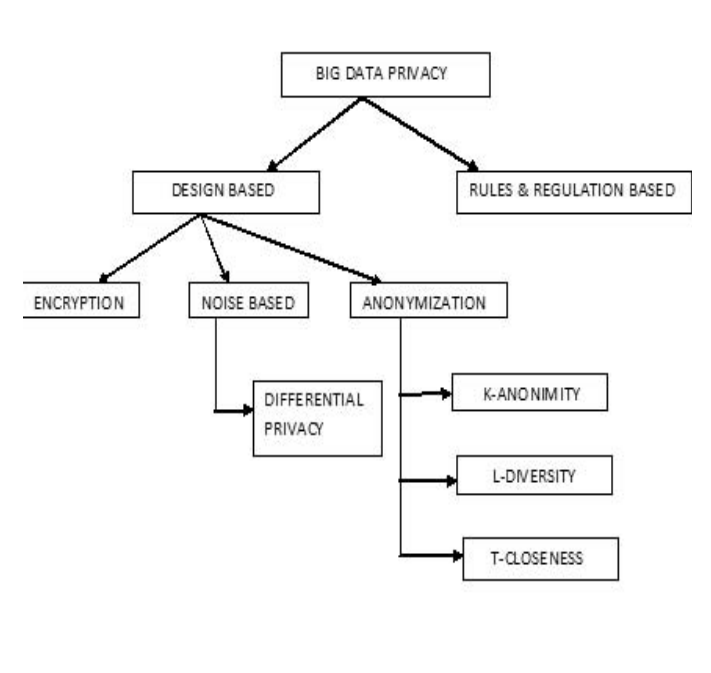
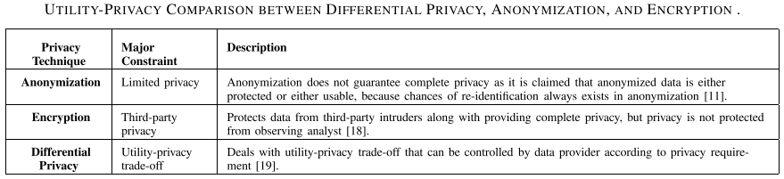
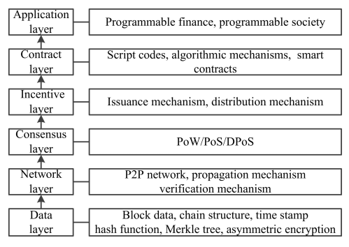

name: inverse layout: true class: center, middle, inverse --- # Apresentação ## Definição geral do problema: *Proteção de dados* vs *Privacidade* vs *Anonimização* .footnote[ This presentation: https://marc-queiroz.github.io/unifil/doctoral-project/slides/latest/index.html ] --- layout: false class: inverse, middle .left-column[ ## Definição Geral ] .right-column[ Proteção de dados vs Privacidade ] .footnote[Begum, S. H., & Nausheen, F. (2018). A Comparative Analysis of Differential Privacy Vs other Privacy Mechanisms for Big Data. 2018 2nd International Conference on Inventive Systems and Control (ICISC), (Icisc), 512–516.] --- layout: false class: inverse, middle .left-column[ ## Definição Geral ] .right-column[ Proteção de dados vs Privacidade - Proteção de dados ] .footnote[HASSAN, M. U.; REHMANI, M. H.; CHEN, J. Differential privacy in blockchain technology: A futuristic approach.Journal of Parallel and Distributed Computing] ??? A segurança dos dados é comumente conhecida como confidencialidade, disponibilidade e integridade dos dados. Garantia que os dados não sejam usados por usuários não autorizados. (Controle de Acesso - AC) --- layout: false class: inverse, middle .left-column[ ## Definição Geral ] .right-column[ Proteção de dados vs Privacidade - Proteção de dados - Privacidade ] .footnote[HASSAN, M. U.; REHMANI, M. H.; CHEN, J. Differential privacy in blockchain technology: A futuristic approach.Journal of Parallel and Distributed Computing] ??? A privacidade dos dados é definida como o uso apropriado dos dados. Quando empresas e comerciantes usam dados ou informações que lhe são fornecidos, os dados devem ser usados de acordo com os fins acordados, sem divulgar as informações do consumidor. --- layout: false class: inverse, middle .left-column[ ] .right-column[ As abordagens para alcançar a privacidade são: - Encriptação - Inclusão de ruídos - Anonimização .footnote[ ] ] --- layout: false class: inverse, middle .left-column[ Classificação das técnicas de preservação da privacidade ] .right-column[  ] .footnote[Begum, S. H., & Nausheen, F. (2018). A Comparative Analysis of Differential Privacy Vs other Privacy Mechanisms for Big Data. 2018 2nd International Conference on Inventive Systems and Control (ICISC), (Icisc), 512–516.] --- layout: false class: inverse, middle .left-column[ Estratégias para preservar a privacidade ] .right-column[ Encriptação: é o método tradicional para proteger dados de adversários e de usuários não autorizados. [18] .footnote[ Hassan, M. U., Rehmani, M. H., & Chen, J. (2020). Differential Privacy Techniques for Cyber Physical Systems: A Survey. IEEE Communications Surveys & Tutorials, 22(1), 746–789. https://doi.org/10.1109/COMST.2019.2944748 [18] R. Lu, H. Zhu, 2014. Toward efficient and privacy preserving computing in big data. ] ] --- layout: false class: inverse, middle .left-column[ Estratégias para preservar a privacidade ] .right-column[ Anonimização: São técnicas baseadas na manipulação dos dados de tal maneira que impeça a identificação da informação chave. .footnote[ Hassan, M. U., Rehmani, M. H., & Chen, J. (2020). Differential Privacy Techniques for Cyber Physical Systems: A Survey. IEEE Communications Surveys & Tutorials, 22(1), 746–789. https://doi.org/10.1109/COMST.2019.2944748 Begum, S. H., & Nausheen, F. (2018). A Comparative Analysis of Differential Privacy Vs other Privacy Mechanisms for Big Data. 2018 2nd International Conference on Inventive Systems and Control (ICISC), (Icisc), 512–516. ] ] --- layout: false class: inverse, middle .left-column[ Fragilidade da anonimização ] .right-column[ Hassan, elenca no survey diversos trabalhos que demonstram que técnicas de anonimização podem ser facilmente comprometidas. .footnote[ [1] Hassan, M. U., Rehmani, M. H., & Chen, J. (2020). Differential Privacy Techniques for Cyber Physical Systems: A Survey. IEEE Communications Surveys & Tutorials, 22(1), 746–789. https://doi.org/10.1109/COMST.2019.2944748 ] ] --- layout: false class: inverse, middle .left-column[ Fragilidade da anonimização ] .right-column[ [24] Capaz de identificar uma pessoa com 95% de acurácia usando 4 pontos temporais. .footnote[ [1] Hassan, M. U., Rehmani, M. H., & Chen, J. (2020). Differential Privacy Techniques for Cyber Physical Systems: A Survey. IEEE Communications Surveys & Tutorials, 22(1), 746–789. https://doi.org/10.1109/COMST.2019.2944748 [24] Montoye et al 2013. Unique in the crowd. Tre privacy bounds of human mobility. ] ] --- layout: false class: inverse, middle .left-column[ Fragilidade da anonimização ] .right-column[ [25] Outro experimento de Montojoye usando metadados de cartão de crédito, mostrou 90% de acurácia usando apenas 4 pontos temporais, usando dados anonimizados. .footnote[ [1] Hassan, M. U., Rehmani, M. H., & Chen, J. (2020). Differential Privacy Techniques for Cyber Physical Systems: A Survey. IEEE Communications Surveys & Tutorials, 22(1), 746–789. https://doi.org/10.1109/COMST.2019.2944748 [25] Montojoye, 2015. Unique in the shopping mall: On the reidentifiability of creditcard metadata. ] ] --- layout: false class: inverse, middle .left-column[ Estratégias para preservar a privacidade ] .right-column[ Privacidade Diferencial: Ao contrário da encriptação DP é o mecanismo menos complexo para a preservar a privacidade. O custo computacional de DP é o calculo do ruído usando uma distribuição de probabilidade pré-definida. .footnote[ Hassan, M. U., Rehmani, M. H., & Chen, J. (2020). Differential Privacy Techniques for Cyber Physical Systems: A Survey. IEEE Communications Surveys & Tutorials, 22(1), 746–789. https://doi.org/10.1109/COMST.2019.2944748 ] ] ??? Na PD usuários podem controlar o nível de privacidade ajustando no nível de ruído no parâmetro "epsilon". Diferente de anonimização os dados são protegidos com uma metodologia para perturbar o dados. --- layout: false class: inverse, middle .left-column[ PD ] .right-column[ [30] Mostra vários mecanismos de adição de ruído em DP capazes de proteger a privacidade em buscas numéricas e não numéricas. .footnote[ Hassan, M. U., Rehmani, M. H., & Chen, J. (2020). Differential Privacy Techniques for Cyber Physical Systems: A Survey. IEEE Communications Surveys & Tutorials, 22(1), 746–789. https://doi.org/10.1109/COMST.2019.2944748 [30] T. Zhu, G. Li. W. Zhou. 2017. Preliminar of DP. ] ] --- layout: false class: inverse, middle .left-column[ ## PD ] .right-column[  .footnote[ Hassan, M. U., Rehmani, M. H., & Chen, J. (2020). Differential Privacy Techniques for Cyber Physical Systems: A Survey. IEEE Communications Surveys & Tutorials, 22(1), 746–789. https://doi.org/10.1109/COMST.2019.2944748 ] ] --- layout: false class: inverse, middle .left-column[ ## DP e Blockchain ] .right-column[ Quais são as oportunidades de aplicação de DP em Blockchain? .footnote[HASSAN, M. U.; REHMANI, M. H.; CHEN, J. Differential privacy in blockchain technology: A futuristic approach.Journal of Parallel and Distributed Computing] ] --- layout: false class: inverse, middle .left-column[ ## Blockchain Architecture ] .right-column[  .footnote[ WU, J.; TRAN, N. K. 2018. Application of blockchain technology in sustainableenergy systems: An overview. ] ] ??? A camada de dados: é a camada mais baixa do blockchain, e que tem o papel mais importante no projeto e desenvolvimento da DLT. Rede: Responsável por disseminar os blocos gerados na camada de dados para todos os nós participantes da rede. Consenso: inclui os algoritmos de consenso nos quais são usados para alcaçar um ponto único de acordo entre todos nós não confiáveis na DLT. Incentivo: a força mais importante, pois motiva os mineradores e aprticipantes a participarem no desenvolvimento e funcionamento do blockchain, provendo incetivos para os participantes. Contrato: Permite aos desenvolvedores criar suas soluções através da rede. Aplicação: é a camada superior que se comunica com o usuário final. Esta camada é a mais vulnerável a aspectos de segurança e ataques a privacidade. --- layout: false class: inverse, middle .left-column[ ## Frase ] .right-column[ No entanto, blockchain é em si próprio uma boa opção para melhorar a segurança e confiança, o mesmo não é pré-equipado com nenhuma tecnologia para preservar a privacidade. .footnote[HASSAN, M. U.; REHMANI, M. H.; CHEN, J. 2020. Differential privacy in blockchain technology: A futuristic approach.Journal of Parallel and Distributed Computing ] ] --- layout: false class:inverse,center,middle # Obrigado